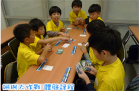
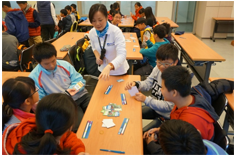
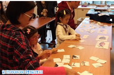

淨灘時間
淨灘活動預計進行三小時，包含解說、分配工具、淨灘、垃圾分類、場地復原、工具清洗回收、經驗分享回饋。 一般以8-15人一組為佳，每組由一位小組長帶領。
淨灘流程
| Step"1" | Step"2" | Step"3" | Step"4" | Step"5" | Step"6" | Step"7" |
|
活動開場 說明及大合照 |
分組與淨灘 工具分配 |
開始撿拾 海漂垃圾 |
海漂垃圾 分類與統計 |
場地復原 |
工具清洗與回收 | 經驗分享與回顧 |
- 活動開場說明及大合照
- 分組與淨灘工具分配
- 開始撿拾海漂垃圾
- 海漂垃圾分類與統計
- 場地復原
- 工具清洗與回收
- 經驗分享與回顧
安全注意事項
全程務必戴手套，建議使用夾子撿取垃圾，避免受傷。 穿著合適的包腳鞋子，勿跑跳及嬉戲打鬧。 注意玻璃、針頭、其他尖銳物品。 遠離海浪，並隨時注意漲退潮的潮水之變化。 若廢棄物太過於龐大，切勿一人搬運清理。 若有拾獲尖銳金屬物裝罐、壓縮瓶類，需獨立裝袋，疑似外漏不明液體獨立裝袋綁好。 避免踩踏傷害海濱植物或其他海灘上的生物。


大家一起來淨灘
海科館ICC淨灘活動預約簡章，歡迎大家一起來清淨海洋!!
內容放在這裡
內容放在這裡
內容放在這裡
內容放在這裡
內容放在這裡
的內容 放在這裡的內容放在這裡的內容放在這裡的內容放在這裡的內容放在這裡的內容放在這裡的內容放在這裡的內容放在這裡的內容放在這裡的
相關圖片


